A 3D cold plate
planex2d sketches lie on planes in 3D. Here, a constraint sketch on a plane is the path of a cooling pipe. OpenCASCADE sweeps the pipe’s cross-section along it and joins the pipe to a plate, netgen meshes the result, and NGSolve solves the oil flow in the pipe and the temperature in the plate and the oil. COBYLA from SciPy moves four points of the path, which are eight dimensions of the sketch, to make the plate cooler at a limited pressure drop.
The example is an aluminum cold plate, WP = 160 wide, 120 deep and wall = 2 thick, that carries 50 W of electronics spread evenly over its middle W = 120 × 120, while the strips of side = 20 on the left and right are not heated. A pipe of outer radius Ro = 5 and inner radius Ri = 3, sunk 1 into the plate’s top, carries oil at 0.2 L/min that comes in at 20 °C. It enters in the middle of the front edge and leaves in the middle of the back edge, and in between, it runs
wherever the design puts it. Lengths are in mm, pressure in kPa and heat in W.
[1]:
import math
import netgen.occ as occ
import ngsolve as ngs
import numpy as np
import planex as px
from scipy.optimize import minimize
The path
The path is a constraint sketch on the plane of the pipe’s axis, zc = 4 above the plate’s top, with its origin at the plate’s front left corner. A fixed construction line of 10 leads in along y to the middle of the front edge, another leads out from the middle of the back edge, and the spline meander runs from the end of one to the start of the other through four points, constrained tangent to both lines. The four points are meander.p1 to meander.p4, counted with the start as
p0, and each has two dimensions: p1_h is the distance of the first point from the sketch’s vertical axis px.V, the plate’s left edge, and p1_v its distance from px.H, the front edge. With the eight dimensions nothing can move. They are the design, and Path builds the sketch for given values.
[3]:
W = 120.0
side = 20.0
wall = 2.0
WP = W + 2 * side
Ro = 5.0
Ri = 3.0
zc = Ro - wall / 2
corner = px.Plane(origin=(-WP / 2, -W / 2, zc))
def Path(points):
path = px.Sketch(corner, id="path")
path.Move((WP / 2, -10)).Line(0, 10, id="in", construction=True)
path.Move("in.end", px.Coincident).Spline([*points, (WP / 2, W)], id="meander")
path.Line(0, 10, id="out", construction=True)
path.Constrain("in", "meander", px.Tangent)
path.Constrain("meander", "out", px.Tangent)
for p in ("in.start", "in.end", "out.start", "out.end"):
path.Constrain(p, px.Fix)
for k, (h, v) in enumerate(points, start=1):
path.Constrain(f"meander.p{k}", px.V, px.Distance, h, id=f"p{k}_h")
path.Constrain(f"meander.p{k}", px.H, px.Distance, v, id=f"p{k}_v")
return path
initial = [(WP / 2 + 25 * math.sin(2 * math.pi * v / W), v) for v in (24.0, 48.0, 72.0, 96.0)]
path = Path(initial)
The path that the optimization starts from is an S: the four points lie on x = 80 + 25 sin(2π y / 120), so that the pipe swings out to the right in the front half of the plate and to the left in the back half. Figure 1 shows the sketch as drawn by planex2d, with a sign for each constraint, and the path on the plate, with the heated area dashed and the four design points as dots.
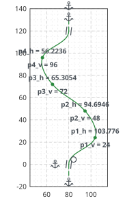
(a) The path sketch and its constraints
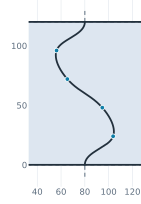
(b) On the plate: the heated area dashed, the four points
The pipe and the plate
The pipe’s cross-section lies on the plane across the start of the path: a disc of radius Ro for the pipe and one of radius Ri for the oil in it, each drawn as two half circles. OpenCASCADE sweeps both along the path with occ.Pipe: the outer disc gives the pipe as a solid rod, the inner disc the oil. The rod is fused to the plate. Where it dips into the plate’s top, it leaves a sharp re-entrant edge on either side, the edges in the plane z = 0 inside the plate, and a chamfer of 2
fills them. An edge between two faces comes up once for each of them, so each is kept once. Gluing the oil into the body (occ.Glue) splits the rod into the pipe wall and the oil: one shape of two solids, metal and coolant, that share the bore, so that their meshes match there.
The names for the solver are assigned after the glue, first to the metal’s faces and then to the coolant’s. The bore is a face of both, and the last name wins. The coolant’s faces are the bore, its two ends the inlet and the outlet; the plate’s underside is the bottom, and everything else of the metal is outside.
[5]:
profile_plane = px.Plane(origin=(0, -W / 2, zc), normal=(0, 1, 0), axis=(1, 0, 0))
def disc(r):
return px.QuickSketch(profile_plane).Move((r, 0), dir=(0, 1)).Arc(r, 180).Arc(r, 180).Face().ToOCCShape()
outer = disc(Ro)
inner = disc(Ri)
def on_top(edge):
t0, t1 = edge.parameter_interval
points = [edge.Value(t0 + (t1 - t0) * k / 8) for k in range(9)]
inside = all(abs(p.x) < WP / 2 - 1e-3 and abs(p.y) < W / 2 - 1e-3 for p in points[1:-1])
return inside and all(abs(p.z) < 1e-4 for p in points)
def ColdPlate(path, chamfer=2.0):
spine = path.ToOCCWire()
rod, oil = occ.Pipe(spine, outer), occ.Pipe(spine, inner)
plate = occ.Box(occ.Pnt(-WP / 2, -W / 2, -wall), occ.Pnt(WP / 2, W / 2, 0))
body = plate + rod
seam, seen = [], set()
for e in body.edges:
t0, t1 = e.parameter_interval
m = e.Value((t0 + t1) / 2)
key = (round(e.mass, 4), round(m.x, 4), round(m.y, 4))
if on_top(e) and key not in seen:
seen.add(key)
seam.append(e)
body = body.MakeChamfer(seam, chamfer)
glued = occ.Glue([body, oil])
metal, coolant = sorted(glued.solids, key=lambda s: s.mass, reverse=True)
metal.name = "metal"
coolant.name = "coolant"
metal.faces.name = "outside"
coolant.faces.name = "bore"
coolant.faces.Min(occ.Y).name = "inlet"
coolant.faces.Max(occ.Y).name = "outlet"
metal.faces.Min(occ.Z).name = "bottom"
return glued, metal, coolant
glued, metal, coolant = ColdPlate(path)
names = sorted({f.name for f in glued.faces})
print(len(glued.solids), "solids, face names", names)
2 solids, face names ['bore', 'bottom', 'inlet', 'outlet', 'outside']
Figure 2 shows the path and the profile at its start, and the cold plate seen from the same side. Figure 3 is a thin slice of metal and oil across the pipe at y = −20, seen from the front, with the pipe sunk 1 into the plate, the chamfers on either side of it, and the oil inside.
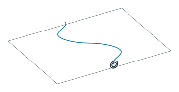
(a) The path and the profile at its start
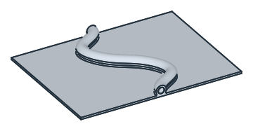
(b) plate and pipe in one, chamfered, the oil glued in
Rules before solving
The design moves the points freely, and not every path makes a valid pipe. Rules checks the path alone, with its centerline sampled from the sketch’s OpenCASCADE wire, in a few milliseconds. It measures:
the tightest bend, which must be at least 1.2 Ro: a pipe bent tighter than Ro folds into itself, and the chamfers reach Ro from its axis;
the closest approach of two passes, at least 2 Ro + 2 between their axes, so that 2 is left between the pipes;
the margin to the plate’s edges: the pipe stays 1 inside, except near the ends, where it leaves the plate;
the length of the path.
[7]:
def centerline(path, n=1500):
points = []
for e in path.ToOCCWire().edges:
t0, t1 = e.parameter_interval
points += [(q.x, q.y) for q in (e.Value(t0 + (t1 - t0) * k / n) for k in range(n + 1))]
return np.array(points)
def Rules(path):
p = centerline(path)
d1 = np.gradient(p, axis=0)
d2 = np.gradient(d1, axis=0)
cross = np.abs(d1[:, 0] * d2[:, 1] - d1[:, 1] * d2[:, 0])
speed = np.linalg.norm(d1, axis=1)
bend = (speed ** 3 / np.maximum(cross, 1e-300))[3:-3].min()
s = np.r_[0, np.cumsum(np.hypot(*np.diff(p, axis=0).T))]
q, sq = p[::5], s[::5]
dist = np.hypot(q[:, None, 0] - q[None, :, 0], q[:, None, 1] - q[None, :, 1])
far = np.abs(sq[:, None] - sq[None, :]) > 4 * (Ro + 1) * math.pi / 2
clearance = dist[far].min() if far.any() else 1e9
away = (s > 15) & (s < s[-1] - 15)
margin = min((WP / 2 - Ro - 1) - np.abs(p[:, 0]).max(),
(W / 2 - Ro - 1) - np.abs(p[away, 1]).max())
return {"bend": bend, "clearance": clearance, "margin": margin, "length": s[-1]}
r = Rules(path)
print("tightest bend", round(r["bend"], 1), "passes", round(r["clearance"], 1), "apart")
print("margin", round(r["margin"], 1), "length", round(r["length"], 1))
tightest bend 8.6 passes 31.4 apart
margin 5.4 length 161.6
The mesh
Mesh has netgen use the names. The bore gets elements of 1, so that the thin layer of oil along the wall, where the heat goes in, is resolved, and everything else gets elements of 5 at most. The elements are curved to order 3, so that the bore stays round.
[8]:
def Mesh(glued):
glued.faces["bore"].maxh = 1.0
mesh = ngs.Mesh(occ.OCCGeometry(glued).GenerateMesh(maxh=5.0, minh=0.3))
mesh.Curve(3)
return mesh
mesh = Mesh(ColdPlate(path)[0])
print(mesh.ne, "tetrahedra in", mesh.GetMaterials())
print("boundaries", sorted(set(mesh.GetBoundaries())))
34638 tetrahedra in ('metal', 'coolant')
boundaries ['bore', 'bottom', 'inlet', 'outlet', 'outside']
Flow and heat
The oil is an ISO VG 32 oil:
a kinematic viscosity of 32 mm²/s, so a dynamic viscosity
muof 32 times the density;a density
rhoof 870 kg/m³;a heat capacity
cpof 2000 J/(kg K);a conductivity
k_oilof 0.13 W/(m K).
Plate and pipe are aluminum, k_metal = 200 W/(m K). The flow Q is 0.2 L/min, the heat P 50 W and the oil comes in at T_in = 20 °C. In the units of the page:
[9]:
rho = 870e-9
mu = rho * 32.0
cp = 2000.0
k_oil = 0.13e-3
k_metal = 0.2
Q = 0.2e6 / 60
P = 50.0
T_in = 20.0
def poiseuille(length):
return 8 * mu * length * Q / (math.pi * Ri ** 4)
Solve takes the mesh and has NGSolve solve the flow and then the temperature. How it does that does not matter for the geometry, so it sits in a hidden cell. In the coolant: Stokes flow, scaled to 0.2 L/min, at a Reynolds number of about 22. In metal and coolant together: the temperature, carried along by the flow, with the 50 W going into the heated part of the bottom and the oil coming in at 20 °C. It returns the pressure drop, the hottest point of the heated bottom, its mean temperature,
a p-norm of it (p = 20: close to the hottest point, but smooth, so that an optimizer can follow it) and the share of the 50 W that the oil carries out. poiseuille is the pressure drop of a straight pipe of the given length.
[11]:
start = Solve(mesh)
print("hottest", round(start["max"], 1), "°C, p-norm", round(start["pnorm"], 1), "°C")
print("mean", round(start["mean"], 1), "°C, pressure drop", round(start["dp"], 3), "kPa")
print("Poiseuille for a straight pipe as long", round(poiseuille(r["length"]), 3), "kPa")
print("the oil carries out", round(100 * start["balance"], 1), "% of the heat")
hottest 109.1 °C, p-norm 103.1 °C
mean 101.3 °C, pressure drop 0.471 kPa
Poiseuille for a straight pipe as long 0.471 kPa
the oil carries out 100.0 % of the heat
Checks:
the oil carries out the heat that goes in, to within a fraction of a percent;
the pressure drop equals that of a straight pipe as long as the path: in a flow this slow, the bends cost next to nothing. This makes the limit on the pressure drop a limit on the length of the pipe.
The optimization
COBYLA starts from the S of Figure 1, which already spreads the pipe over the heated area. A straight pipe down the middle would be a poor start, because all the heat would have to reach one pass.
The objective is the p-norm of the bottom’s temperature. The constraints, each scaled to about 1, are:
the three rules on bend, clearance and margin;
a pressure drop of at most
dp_max= 0.95 kPa, almost three times that of the straight pipe: room for a pipe almost three times as long.
evaluate builds a layout, checks the rules and solves only if they pass, and it ends the run after budget = 80 solves. A layout that breaks a rule, or cannot be built or solved, gets a high temperature and the pressure drop of a straight pipe as long as its path, so that COBYLA still sees which way is out. evaluate remembers every layout, as COBYLA asks for the objective and each constraint at the same point.
COBYLA works on the eight dimensions scaled to 0 to 1 over the box from 10 to 10 short of the plate’s edges, so that one step size suits all of them. It starts from the S with steps of a tenth of the box. Layouts that break a rule cost no solve and do not count toward the 80 solves, and COBYLA may stop earlier on its own, when its steps get small. It may end a hair over a constraint, so the best layout is the coolest one within 0.1 % of the pressure limit.
[12]:
lo = np.array([10.0, 10.0] * 4)
hi = np.array([WP - 10, W - 10] * 4)
budget = 80
trail = []
known = {}
class Enough(Exception):
pass
def pairs(x):
return [(x[2 * k], x[2 * k + 1]) for k in range(4)]
def evaluate(x):
key = tuple(np.round(x, 6))
if key in known:
return known[key]
e = {"x": np.array(x), "pnorm": 150.0, "solved": False,
"bend": 0.0, "clearance": 0.0, "margin": -10.0, "length": 1e3}
try:
path = Path(pairs(x))
e.update(Rules(path))
except Exception:
path = None
e["dp"] = poiseuille(e["length"])
if e["bend"] >= 1.2 * Ro and e["clearance"] >= 2 * Ro + 2 and e["margin"] >= 0:
if sum(t["solved"] for t in trail) == budget:
raise Enough
try:
e.update(Solve(Mesh(ColdPlate(path)[0])), solved=True)
e["solve"] = sum(t["solved"] for t in trail) + 1
except Exception:
pass
trail.append(e)
known[key] = e
return e
def layout(u):
return lo + np.clip(u, 0, 1) * (hi - lo)
def temperature(u):
return evaluate(layout(u))["pnorm"]
def bend_rule(u):
return evaluate(layout(u))["bend"] / (1.2 * Ro) - 1
def clearance_rule(u):
return evaluate(layout(u))["clearance"] / (2 * Ro + 2) - 1
def margin_rule(u):
return evaluate(layout(u))["margin"] / 5
def pressure_rule(u):
return 1 - evaluate(layout(u))["dp"] / dp_max
x0 = np.array(initial).ravel()
dp_max = 0.95
try:
stop = minimize(temperature, (x0 - lo) / (hi - lo), method="COBYLA", bounds=[(0, 1)] * 8,
constraints=[{"type": "ineq", "fun": c}
for c in (bend_rule, clearance_rule, margin_rule, pressure_rule)],
options={"rhobeg": 0.1, "maxiter": 1000, "tol": 1e-3}).message
except Enough:
stop = "Stopped after the budget of solves."
solved = [e for e in trail if e["solved"]]
within = [e for e in solved if e["dp"] <= dp_max * 1.001]
best = min(within, key=lambda e: e["pnorm"])
print(stop, len(trail), "layouts,", len(solved), "solved")
print("start: p-norm", round(trail[0]["pnorm"], 2), "°C, hottest", round(trail[0]["max"], 2), "°C")
print("best: solve", best["solve"], "p-norm", round(best["pnorm"], 2), "°C")
print("best: hottest", round(best["max"], 2), "°C")
print("best: pressure drop", round(best["dp"], 3), "kPa, points", np.round(best["x"], 1).tolist())
Return from COBYLA because the trust region radius reaches its lower bound. 60 layouts, 52 solved
start: p-norm 103.06 °C, hottest 109.06 °C
best: solve 47 p-norm 80.6 °C
best: hottest 85.63 °C
best: pressure drop 0.738 kPa, points [118.8, 21.4, 121.8, 63.3, 53.9, 62.9, 49.5, 107.7]
The result
Figure 4 counts every real solve; layouts that broke a rule cost no solve and are not included. Seen from above, Figure 5 shows the start, the path of the best layout after every five solves, and the best one. The pipe bends out to both sides, so that its passes reach more of the heated area.
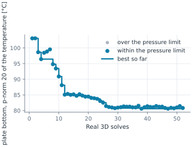
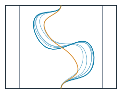
Figure 6 shows the underside of the plate from below, for the start and the best layout on one color scale, and for the best layout again on a scale of its own, which shows where it is still warmest. The lines are the pipe’s outline and the feet of the chamfers.
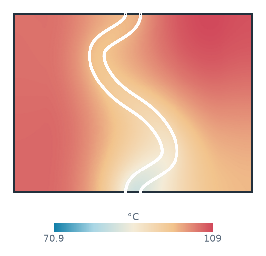
(a) start: hottest 109.1 °C
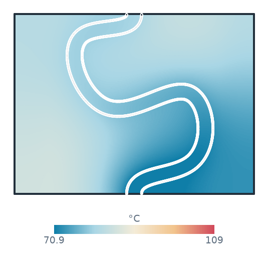
(b) best: hottest 85.6 °C
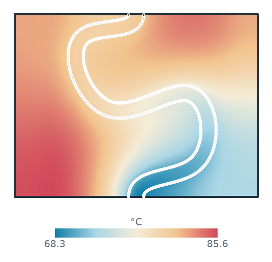
(c) Best, on its own scale
Figure 7 shows the pressure in the mid-plane of the pipe for the start and the best layout on one color scale. The cut is a planex2d face where the plane meets the coolant (px.Intersect3d). The best layout spends more pressure on a longer pipe. Figure 8 shows the two cold plates in 3D.
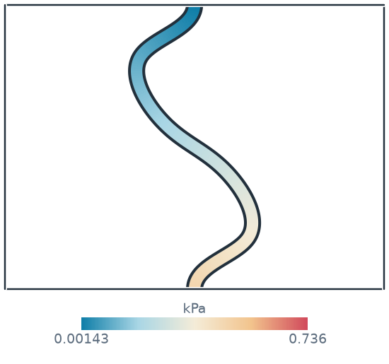
(a) start: pressure
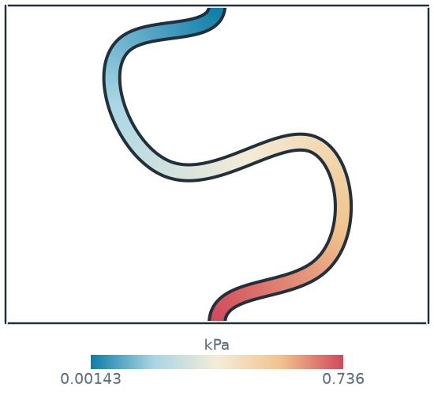
(b) best: pressure
(a) start in 3D
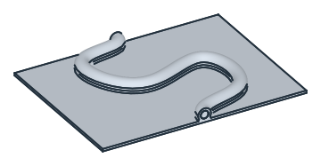
(b) best in 3D
The best layout as a solid, to turn and zoom:
[16]:
from ngsolve_webgpu.jupyter import Draw
glued, metal, coolant = ColdPlate(Path(pairs(best["x"])))
metal.faces.col = (0.867, 0.902, 0.941)
coolant.faces.col = (0.353, 0.663, 0.812)
Draw(glued, euler_angles=[-60, 0, 30])
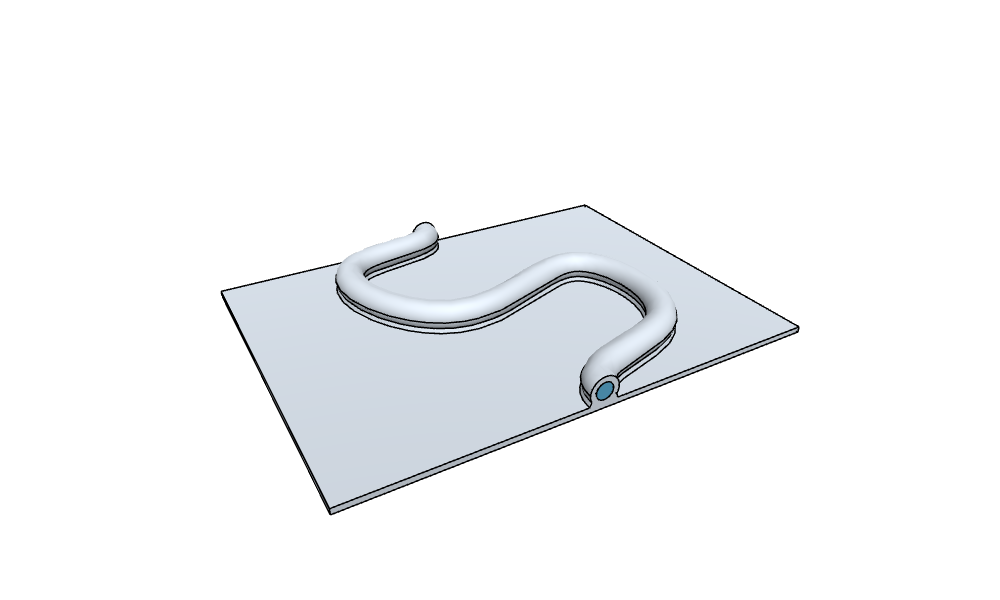
See the SciPy page for the same pattern in 2D, with planex2d measurements as the objective.